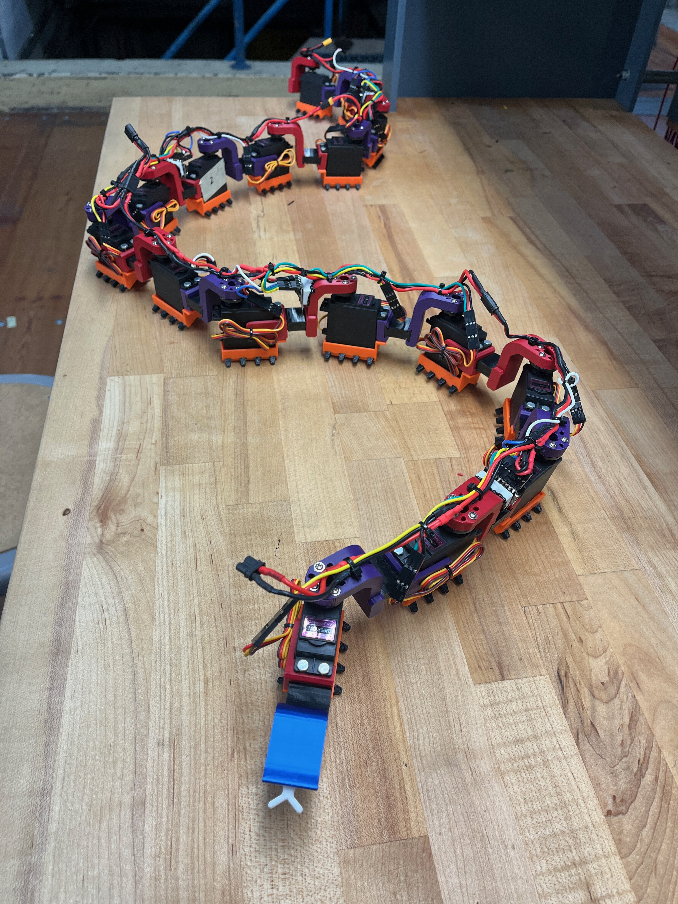
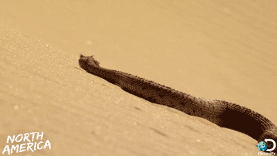
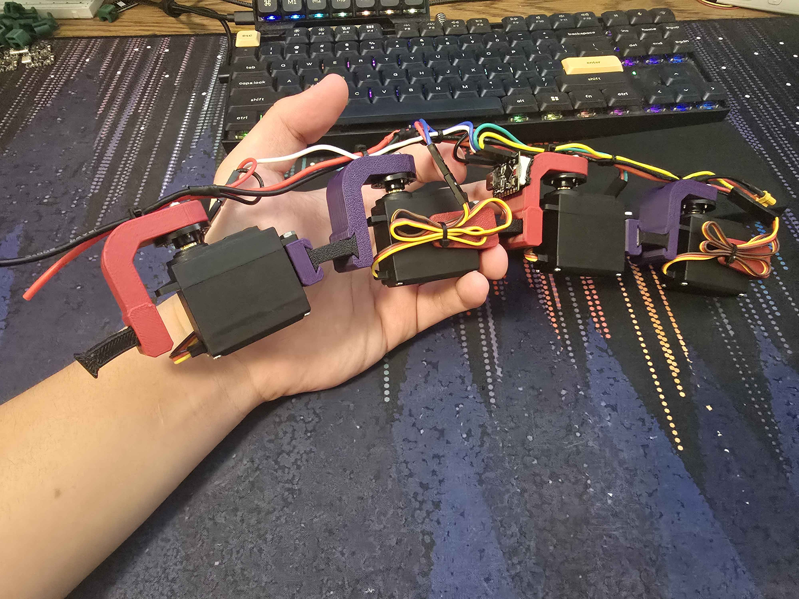
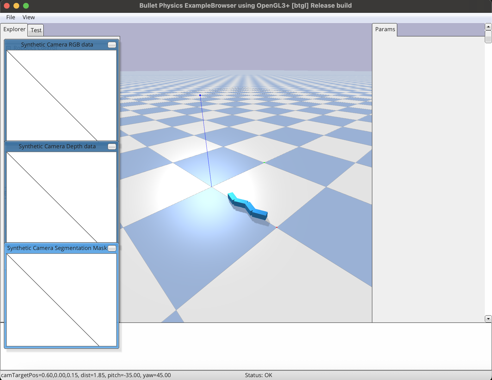
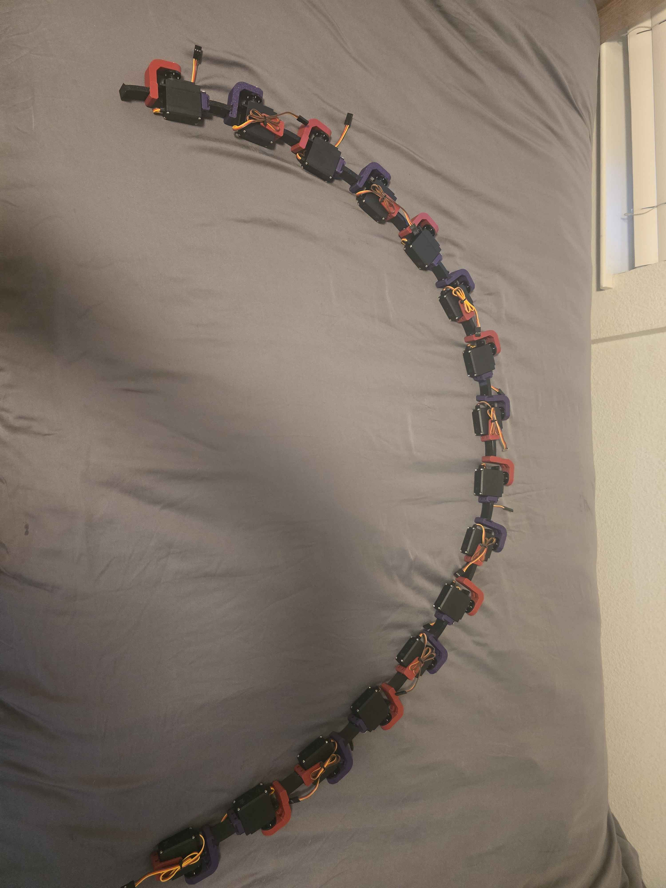

SlytherDrive
Bio-inspired Snake Robot
Project Overview
SlytherDrive was a bio-inspired robotics snake design, utilizing a hybrid rigid-soft design to achieve snake slithering locomotion. As a final project for my Robotic Locomotion class, our group chose an ambitious project, and focused heavily on the mechanics behind getting a robot like this to actuate. Over the course of the semester, we researched, designed, and implemented this snake robot to understand how the ground reaction forces, contact forces, and segment coordination would allow a snake to move.

Snake Biomechanic Research
The first step was research on how a real snake is able to actuate. Throughout the papers we read, we discovered 4 main ways of serpentine motion: lateral undulation, rectilinear, concertina, and sidewinding (the movement we attempted to replicate, and the most commonly seen with snakes). After researching multiple robotic snake papers too, we found that the main driving force that propels the snake is the anisotropic (or unequal) friction on the bottom scales of the snake. Due to a higher coefficient of friction in the sideways direction compared to the forward component, the snake is able to achieve forward motion by simply propagating a sinusoidal wave throughout its body.

Design Approach
One of the papers we came across offered an interesting way to achieve locomotion, one that we combined with our anisotropic friction scale idea. Researchers exploited the idea of an uneven distribution of ground contact forces, by leaving an upwards +Z tension throughout the body of the snake. By using polyurethane blocks between each segment, the researchers were able to replicate snake locomotion by creating an uneven ground distribution force, and let compliance determine where the snake actually made contact with the ground to push itself forward. By creating blocks to only let certain regions of the snake touch the ground, we aimed to create the same uneven friction profile real snakes use for sidewinding motion. This combined with our (more ambitious) anisotropic scales would allow us to create a robotic snake able to push itself forward, achieving locomotion.


Simulation
I was in charge of the simulation, and being able to prove that this idea of a non-uniform ground contact force would result in forward locomotion. I chose to simulate the snake through PyBullet, and as someone who had never used this library before, there was a steep learning curve before any progress was made. I was able to finally simulate the snake, with nothing more than 16 rigid links, employing the estimated mass and size that we would eventually build. I also added the uniform +Z tension, as discussed in the paper and, the anisotropic friction that allows the snake to have an uneven ground distribution force during movement. From there, it was simply adjusting each joint at any time step with a sin function, adjusting the angular velocity and amplitude accordingly to get the best forward locomotion.
If the video does not load, download it here.
Milestones
Attached are the progress milestones throughout the semester. We were instructed to make 3-4 slides per each checkpoint, highlighting what progress was made each time. We can also see how the project has evolved, with our earliest checkpoint showcasing that we would go down the soft robotics route. Due to time constraints and unfamiliarity, we eventually pivoted to the current rigid-soft snake you see today.
Outcome
As our project wrapped up, we were able to present our work to our professor (receiving an A+ in the class), and turning our simulation results into a real physical prototype!
Media Gallery

